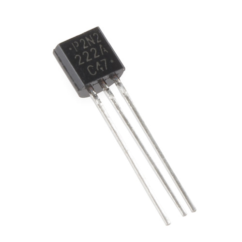
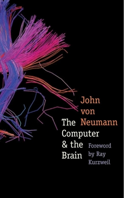
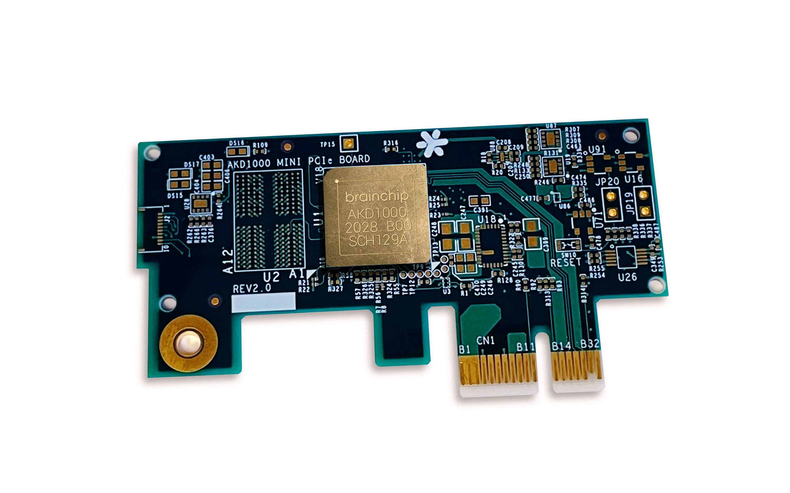

Neuromorphic computing
Den næste generation af computere
Jens Egholm Pedersen
PhD Studerende, KTH Royal Institute of Technology
jeped@kth.se
jegp@mastodon.social
jepedersen.dk
Video: Human Brain Project, 2023
Hvad er problemet?
Er vores computere ikke gode nok?
... I forhold til hvad? Hvad måler vi?
Hva koster'et?
Landauers grænse

$E \geqslant T\ k_B$
Koldt: Billigt
Varmt: Dyrt
Computere er fysiske systemer
Transistorer (computere)
$10^{12}$ transistorer ved $10^9$Hz
Neuroner (hjerner)

$10^{12}$ neuroner ved $10^2$Hz
Wikipedia
Synapser (hjerner)
$10^{14}$ synapser ved $10^5$Hz
Wikipedia
Hvor stor er forskellen?
Per operation
Hvor stor er forskellen?
$1'000'000$ DKK $\approx 1$ Øre
Sadas Shankar, IEEE HPEC, 2023
Hvis Neuromorphic Computing er så godt
hvor bliver det af?
Og hvad har det med ATP at gøre?
Because digital computers and computation have been so successful ... it is difficult today to
reconstruct what analog computing was all about...
- James M. Nyce, 1996

John von Neumann, 1958
The nervous system is based on two types of communication: digital and analog
Eve Marder has spent forty years studying thirty neurons on the stomach of a lobster
Biologisk-inspirerede kredsløb
Neuromorfiske chips
NVIDIA 4090
~500W
2DKK / time

Intel Loihi
~1W
1kr / måned

Akida Brainchip
~100mW
1kr / år

Innatera T1
~1mW
1kr / årh.

Neuromofisk integreret hardware

SynSense 2023
- Kamera + mini neuralt netværk
- Energiforbrug: 1mW, 1kr/årh.

- Kamera + mini GPU
- Energiforbrug: 10W, 10kr / måned
Neuromorfiske robotter
de Croon 2022
Opsummeret:
Neuromorfisk hardware er kropsliggjort AI
Inspireret af fysikken og biologien
Så ...
Neuromorfisk hardware er $\times$1000 så effektivt
Teknologien er ung ... men lover godt
Vi får mindst $\times$1000 flere sensorer
Vi vil se neuromorfiske robotter
Hvad har det med ATP at gøre?
Hvad kan vi bruge neumorfiske computere til?
Hvordan programmerer vi dem?
Det vi kender:

Det vi skal bruge:
$$\tau \frac{dv}{dt} = - v + I$$
Pedersen et al., 2023
Neuromorphic Intermediate Representation
7 simulatorer og 4 hardware platforme
Pedersen et al., 2023
Neuromorfisk hardware findes og kan købes i dag
Neuromorfiske computere er $\times$1000 mere effektive
Neuromorfisk teknologi vil kropsliggøre AI
Neuromorphic computing
Den næste generation af computere
Jens Egholm Pedersen
PhD Studerende, KTH Royal Institute of Technology
jeped@kth.se
jegp@mastodon.social
jepedersen.dk
Video: Human Brain Project, 2023